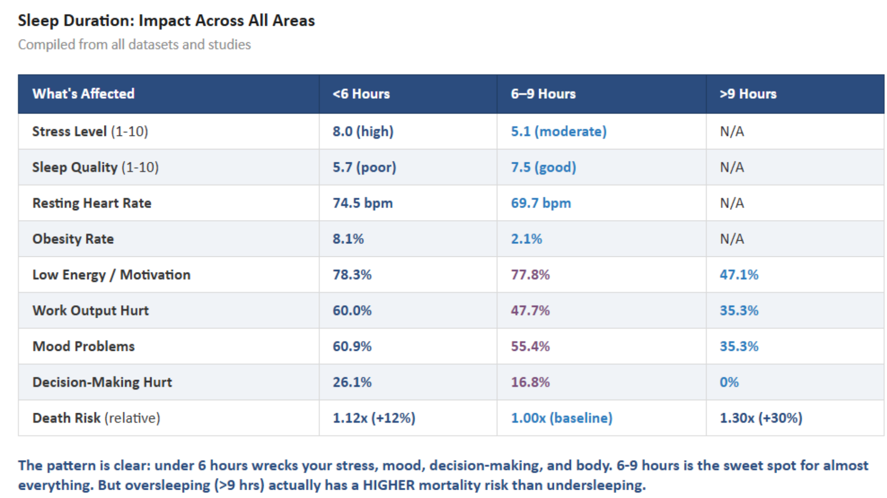

Conclusion
Physical
7–8 hours is the sweet spot for physical activity. Short sleep removes your energy for
exercise, while
excess sleep brings lethargy and reduces time available. Emotional stability and caffeine
dependency are
also best in the 7–9 hour range.
Academic
Productivity and energy peak at 8 hours. Too little sleep significantly impairs the brain's
ability to
focus and retain information. Too much sleep can lead to tardiness and reduced study time.
Mortality
The U-shaped curve is clear: both <6 hours and >9 hours increase all-cause mortality
risk. 7–8 hours
is baseline (lowest) risk. Oversleeping (1.30x risk) is actually a larger risk factor than
undersleeping
(1.12x risk).

This summary table shows that less than 6 hours of sleep is linked to higher stress, poorer sleep
quality, a
higher heart rate, higher obesity rates, and lower productivity. The 6–9 hour range is by far the
best range
across mental, physical, and mortality health & productivity.